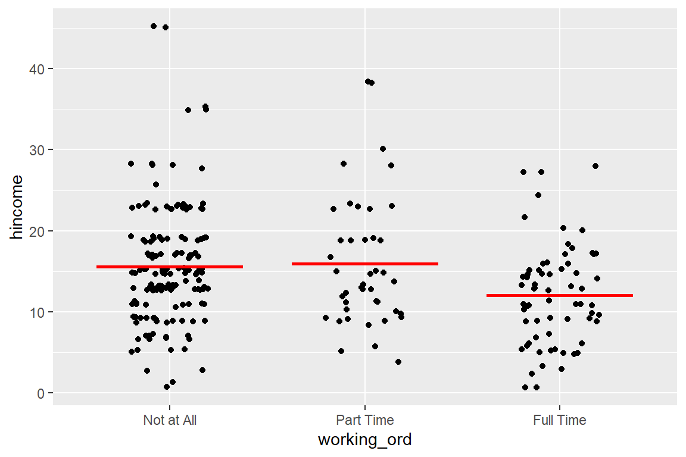
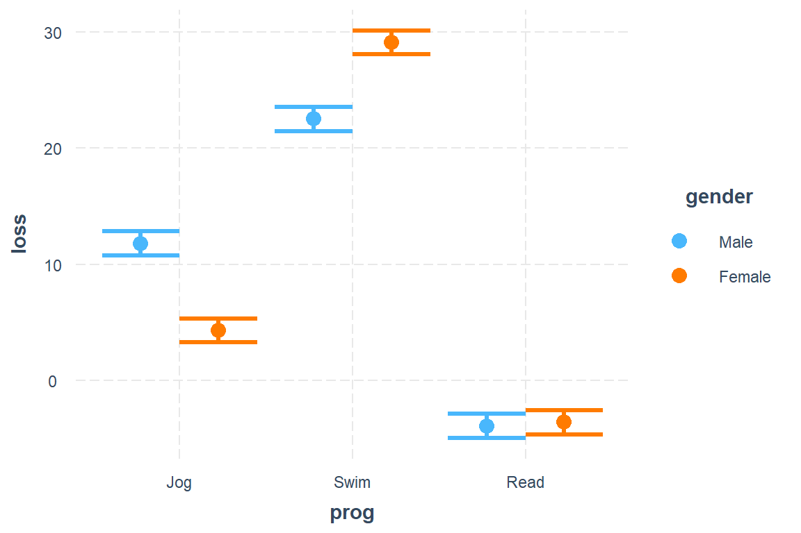
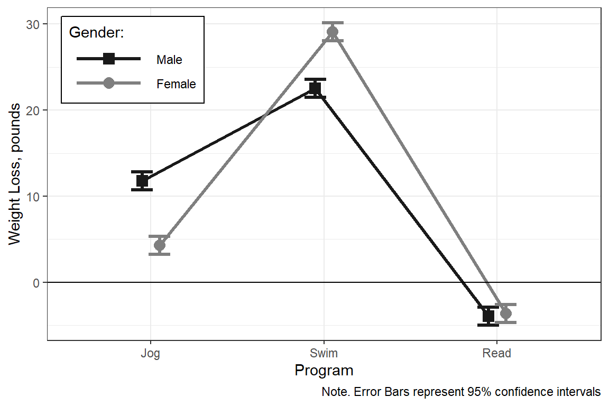

8 Extensions of Logistic Regression - Ex: Canadian Women’s Labour-Force Participation
library(tidyverse)
library(haven) # read in SPSS dataset
library(furniture) # nice table1() descriptives
library(stargazer) # display nice tables: summary & regression
library(texreg) # Convert Regression Output to LaTeX or HTML Tables
library(psych) # contains some useful functions, like headTail
library(car) # Companion to Applied Regression
library(sjPlot) # Quick plots and tables for models
library(car) # Companion to Applied Regression (a text book - includes datasets)
library(MASS) # Support Functions and Datasets
library(nnet) # Multinomial Log-Linear Models8.1 Background
The Womenlf data frame has 263 rows and 4 columns. The data are from a 1977 survey of the Canadian population.
Dependent variable (DV) or outcome
particLabour-Force Participation, a factor with levels:fulltimeWorking full-time
not.workNot working outside the home
parttimeWorking part-time
Indepdentend variables (IV) or predictors
hincomeHusband’s income, in $1000’schildrenPresence of children in the household, a factor with levels:absentno children in the home
presentat least one child at home
regionA factor with levels:AtlanticAtlantic CanadaBCBritish ColumbiaOntarioPrairiePrairie provincesQuebec
8.1.1 Raw Dataset
The data is included in the carData package which installs and loads with the car package.
data(Womenlf, package = "carData") # load the internal data
tibble::glimpse(Womenlf) # glimpse a bit of the dataObservations: 263
Variables: 4
$ partic <fct> not.work, not.work, not.work, not.work, not.work, not...
$ hincome <int> 15, 13, 45, 23, 19, 7, 15, 7, 15, 23, 23, 13, 9, 9, 4...
$ children <fct> present, present, present, present, present, present,...
$ region <fct> Ontario, Ontario, Ontario, Ontario, Ontario, Ontario,...Womenlf %>%
dplyr:: filter(row_number() %in% sample(1:nrow(.), size = 10)) # select a random sample of 10 rows# A tibble: 10 x 4
partic hincome children region
<fct> <int> <fct> <fct>
1 not.work 9 present Prairie
2 not.work 45 present Atlantic
3 not.work 9 present Ontario
4 parttime 9 present Ontario
5 parttime 13 present Prairie
6 not.work 28 present Ontario
7 not.work 23 present BC
8 fulltime 9 absent Ontario
9 fulltime 5 absent Quebec
10 not.work 23 absent Quebec Notice the order of the factor levels, especially for the partic factor
'data.frame': 263 obs. of 4 variables:
$ partic : Factor w/ 3 levels "fulltime","not.work",..: 2 2 2 2 2 2 2 1 2 2 ...
$ hincome : int 15 13 45 23 19 7 15 7 15 23 ...
$ children: Factor w/ 2 levels "absent","present": 2 2 2 2 2 2 2 2 2 2 ...
$ region : Factor w/ 5 levels "Atlantic","BC",..: 3 3 3 3 3 3 3 3 3 3 ...We can view the order of the factors levels
[1] "fulltime" "not.work" "parttime"8.1.2 Declare Factors
Womenlf_clean <- Womenlf %>%
dplyr::mutate(working_ord = dplyr::case_when(partic == "fulltime" ~ 2, # manually re-code a factor
partic == "not.work" ~ 0, # into a numeric variable
partic == "parttime" ~ 1) %>%
factor(levels = c(0, 1, 2), # maually declare the level order
labels = c("Not at All", # and labels of the levels)
"Part Time",
"Full Time"))) %>%
dplyr::mutate(working_any = dplyr::case_when(partic == "fulltime" ~ 1, # manually re-code a factor
partic == "not.work" ~ 0, # into a numeric variable
partic == "parttime" ~ 1) %>%
factor(levels = c(0, 1), # maually declare the level order
labels = c("Not at All", # and labels of the levels)
"At Least Part Time"))) %>%
dplyr::mutate(working_full = dplyr::case_when(partic == "fulltime" ~ 1, # manually re-code a factor
partic == "not.work" ~ 0, # into a numeric variable
partic == "parttime" ~ 0)%>%
factor(levels = c(0, 1), # maually declare the level order
labels = c("Less Than Full Time", # and labels of the levels)
"Full Time"))) %>%
dplyr::mutate(working_type = dplyr::case_when(partic == "fulltime" ~ 1, # manually re-code a factor
partic == "parttime" ~ 0)%>% # into a numeric variable
factor(levels = c(0, 1), # maually declare the level order
labels = c("Part Time", # and labels of the levels)
"Full Time"))) Display the structure of the ‘clean’ version of the dataset
'data.frame': 263 obs. of 8 variables:
$ partic : Factor w/ 3 levels "fulltime","not.work",..: 2 2 2 2 2 2 2 1 2 2 ...
$ hincome : int 15 13 45 23 19 7 15 7 15 23 ...
$ children : Factor w/ 2 levels "absent","present": 2 2 2 2 2 2 2 2 2 2 ...
$ region : Factor w/ 5 levels "Atlantic","BC",..: 3 3 3 3 3 3 3 3 3 3 ...
$ working_ord : Factor w/ 3 levels "Not at All","Part Time",..: 1 1 1 1 1 1 1 3 1 1 ...
$ working_any : Factor w/ 2 levels "Not at All","At Least Part Time": 1 1 1 1 1 1 1 2 1 1 ...
$ working_full: Factor w/ 2 levels "Less Than Full Time",..: 1 1 1 1 1 1 1 2 1 1 ...
$ working_type: Factor w/ 2 levels "Part Time","Full Time": NA NA NA NA NA NA NA 2 NA NA ...8.2 Exploratory Data Analysis
Three versions of the outcome
# Knit to Website: output = "html"
# Knit to PDF: output = "latex2"
# View on Screen: output = ""text", or "markdown", "html"
Womenlf_clean %>%
furniture::table1(working_ord, working_any,
working_full, working_type,
na.rm = FALSE, # do NOT restrict to complete cases!!!
output = "html")| Mean/Count (SD/%) | |
|---|---|
| n = 263 | |
| working_ord | |
| Not at All | 155 (58.9%) |
| Part Time | 42 (16%) |
| Full Time | 66 (25.1%) |
| NA | 0 (0%) |
| working_any | |
| Not at All | 155 (58.9%) |
| At Least Part Time | 108 (41.1%) |
| NA | 0 (0%) |
| working_full | |
| Less Than Full Time | 197 (74.9%) |
| Full Time | 66 (25.1%) |
| NA | 0 (0%) |
| working_type | |
| Part Time | 42 (16%) |
| Full Time | 66 (25.1%) |
| NA | 155 (58.9%) |
Other Predisctors, univariate
# Knit to Website: output = "html"
# Knit to PDF: output = "latex2"
# View on Screen: output = ""text", or "markdown", "html"
Womenlf_clean %>%
furniture::table1("Husband's Income, $1000's" = hincome,
"Children In the Home" = children,
"Region of Canada" = region,
output = "html")| Mean/Count (SD/%) | |
|---|---|
| n = 263 | |
| Husband’s Income, $1000’s | |
| 14.8 (7.2) | |
| Children In the Home | |
| absent | 79 (30%) |
| present | 184 (70%) |
| Region of Canada | |
| Atlantic | 30 (11.4%) |
| BC | 29 (11%) |
| Ontario | 108 (41.1%) |
| Prairie | 31 (11.8%) |
| Quebec | 65 (24.7%) |
# Knit to Website: output = "html"
# Knit to PDF: output = "latex2"
# View on Screen: output = ""text", or "markdown", "html"
Womenlf_clean %>%
furniture::table1("Husband's Income, $1000's" = hincome,
"Children In the Home" = children,
"Region of Canada" = region,
splitby = ~ working_ord,
row_wise = TRUE, # show row %s rather than default column %s
test = TRUE,
output = "html")| Not at All | Part Time | Full Time | P-Value | |
|---|---|---|---|---|
| n = 155 | n = 42 | n = 66 | ||
| Husband’s Income, $1000’s | 0.002 | |||
| 15.6 (7.2) | 16.0 (8.1) | 12.1 (6.1) | ||
| Children In the Home | <.001 | |||
| absent | 26 (32.9%) | 7 (8.9%) | 46 (58.2%) | |
| present | 129 (70.1%) | 35 (19%) | 20 (10.9%) | |
| Region of Canada | 0.71 | |||
| Atlantic | 20 (66.7%) | 4 (13.3%) | 6 (20%) | |
| BC | 14 (48.3%) | 8 (27.6%) | 7 (24.1%) | |
| Ontario | 64 (59.3%) | 17 (15.7%) | 27 (25%) | |
| Prairie | 17 (54.8%) | 6 (19.4%) | 8 (25.8%) | |
| Quebec | 40 (61.5%) | 7 (10.8%) | 18 (27.7%) |
8.2.1 Husband’s Income

Womenlf_clean %>%
ggplot(aes(x = working_ord,
y = hincome)) +
geom_jitter(position=position_jitter(0.2)) +
stat_summary(fun.y = mean,
geom = "errorbar",
aes(ymax = ..y..,
ymin = ..y..),
width = .75,
color = "red",
size = 1)
Womenlf_clean %>%
ggplot(aes(hincome,
x = working_ord,
fill = working_ord)) +
geom_boxplot(alpha = .3)Womenlf_clean %>%
ggplot(aes(hincome,
x = working_ord,
fill = working_ord)) +
geom_violin(alpha = .3)
8.2.2 Children in Home

Womenlf_clean %>%
ggplot(aes(x = children,
fill = working_ord %>% fct_rev)) +
geom_bar(position="fill") +
labs(x = "Children in the Home",
y = "Proportion of Women",
fill = "Working") +
theme_bw() +
scale_fill_manual(values = c("gray25", "gray50", "gray75"))


8.3 Hierarchical (nested) Logistic Regression
For an \(m-\)category polytomy dependent variable is respecified as a series of \(m – 1\) nested dichotomies. A single or combined levels of outcome compared to another single or combination of levels. Then they are analyzed using a series of binary logistic regressions, such that:
- Dichotomies selected based on theory
- Avoid redundancy
- Similar to contrast coding, but for outcome
For this dataset example, the outcome (partic) has \(3-\)categories, so we will investigate TWO nested dichotomies
- outcome =
working_any - outcome =
working_type
8.3.1 Role of Predictors on ANY working
Fit a regular logistic model with all three predictors regressed on the binary indicator for any working. Use the glm() function in the base \(R\) stats package.
fit_glm_1 <- glm(working_any ~ hincome + children + region,
data = Womenlf_clean,
family = binomial(link = "logit"))
summary(fit_glm_1)
Call:
glm(formula = working_any ~ hincome + children + region, family = binomial(link = "logit"),
data = Womenlf_clean)
Deviance Residuals:
Min 1Q Median 3Q Max
-1.7927 -0.8828 -0.7283 0.9562 2.0074
Coefficients:
Estimate Std. Error z value Pr(>|z|)
(Intercept) 1.26771 0.55296 2.293 0.0219 *
hincome -0.04534 0.02057 -2.204 0.0275 *
childrenpresent -1.60434 0.30187 -5.315 1.07e-07 ***
regionBC 0.34196 0.58504 0.585 0.5589
regionOntario 0.18778 0.46762 0.402 0.6880
regionPrairie 0.47186 0.55680 0.847 0.3967
regionQuebec -0.17310 0.49957 -0.347 0.7290
---
Signif. codes: 0 '***' 0.001 '**' 0.01 '*' 0.05 '.' 0.1 ' ' 1
(Dispersion parameter for binomial family taken to be 1)
Null deviance: 356.15 on 262 degrees of freedom
Residual deviance: 317.30 on 256 degrees of freedom
AIC: 331.3
Number of Fisher Scoring iterations: 4Check if region is statistically significant with the drop1() function from the base \(R\) stats package. This may be done with a Likelihood Ratio Test (test = "LRT", which is the same as test = "Chisq" for glm models).
# A tibble: 4 x 5
Df Deviance AIC LRT `Pr(>Chi)`
<dbl> <dbl> <dbl> <dbl> <dbl>
1 NA 317. 331. NA NA
2 1 322. 334. 5.13 0.0236
3 1 348. 360. 30.5 0.0000000326
4 4 320. 326. 2.43 0.657 Since the region doesn’t have exhibit any effect on odds a women is in the labor force, remove that predictor in the model to simplify to a ‘best’ final model. Also, center husband’s income at a value near the mean so the intercept has meaning.
fit_glm_2 <- glm(working_any ~ I(hincome - 14) + children,
data = Womenlf_clean,
family = binomial(link = "logit"))
summary(fit_glm_2)
Call:
glm(formula = working_any ~ I(hincome - 14) + children, family = binomial(link = "logit"),
data = Womenlf_clean)
Deviance Residuals:
Min 1Q Median 3Q Max
-1.6767 -0.8652 -0.7768 0.9292 1.9970
Coefficients:
Estimate Std. Error z value Pr(>|z|)
(Intercept) 0.74351 0.24312 3.058 0.00223 **
I(hincome - 14) -0.04231 0.01978 -2.139 0.03244 *
childrenpresent -1.57565 0.29226 -5.391 7e-08 ***
---
Signif. codes: 0 '***' 0.001 '**' 0.01 '*' 0.05 '.' 0.1 ' ' 1
(Dispersion parameter for binomial family taken to be 1)
Null deviance: 356.15 on 262 degrees of freedom
Residual deviance: 319.73 on 260 degrees of freedom
AIC: 325.73
Number of Fisher Scoring iterations: 4The texreg package uses an intermediate function called extract() to extract information for the model and then put it in the right places in the table. We can invervene by writing our own extract_exp() function to use instead.
extract_exp <- function(fit_glm){
beta = coef(fit_glm)
betaci = confint(fit_glm)
fit_glm_exp = texreg::extract(fit_glm)
fit_glm_exp@coef = exp(beta)
fit_glm_exp@ci.low = exp(betaci[, 1])
fit_glm_exp@ci.up = exp(betaci[, 2])
return(fit_glm_exp)
}# Knit to Website: texreg::htmlreg()
# Knit to PDF: texreg::texreg()
# View on Screen: texreg::screenreg()
texreg::htmlreg(extract_exp(fit_glm_2),
custom.coef.names = c("BL: No children, Husband Earns $14,000/yr",
"Husband's Income, $1000's",
"Children in the Home"),
custom.model.names = "OR, Women is in the Workforce at All",
single.row = TRUE,
custom.note = "* The value of '1' is outside the confidence interval for the OR")| OR, Women is in the Workforce at All | ||
|---|---|---|
| BL: No children, Husband Earns $14,000/yr | 2.10 [1.32; 3.44]* | |
| Husband’s Income, $1000’s | 0.96 [0.92; 1.00]* | |
| Children in the Home | 0.21 [0.12; 0.36]* | |
| AIC | 325.73 | |
| BIC | 336.45 | |
| Log Likelihood | -159.87 | |
| Deviance | 319.73 | |
| Num. obs. | 263 | |
| * The value of ‘1’ is outside the confidence interval for the OR | ||
Interpretation:
Among women without children in the home and a husband making $14,000 annually, there is about a 2:1 odds she is in the workforce.
For each additional thousand dollars the husband makes, the odds ratio decreases by about 4 percent.
If there are children in the home, the odds of being in the workforce is nearly a fifth as large.
model: working_any ~ I(hincome - 14) + children
hincome effect
hincome
1 10 20 30 40
0.5476466 0.4527392 0.3514450 0.2619655 0.1886414
children effect
children
absent present
0.6707323 0.2964731 effects::Effect(focal.predictors = c("hincome", "children"),
xlevels = list(hincome = seq(from = 1, to = 45, by = .1)),
mod = fit_glm_2) %>%
data.frame() %>%
ggplot(aes(x = hincome,
y = fit,
color = children,
linetype = children)) +
geom_vline(xintercept = 14, color = "gray25") + # reference line for intercept
geom_line(size = 1) +
theme_bw() +
labs(x = "Husband's Income, in $1000's",
y = "Predicted Probability of\nWomen Being in the Workforce",
color = "Children in\nthe Home:",
linetype = "Children in\nthe Home:") +
theme(legend.position = c(1, 1),
legend.justification = c(1.1, 1.1),
legend.background = element_rect(color = "black")) +
coord_cartesian(ylim = c(0, 1))
8.3.2 Role of Predictors on TYPE of work
Fit a regular logistic model with all three predictors regressed on the binary indicator for level/type of working.
fit_glm_3 <- glm(working_type ~ hincome + children + region,
data = Womenlf_clean,
family = binomial(link = "logit"))
summary(fit_glm_3)
Call:
glm(formula = working_type ~ hincome + children + region, family = binomial(link = "logit"),
data = Womenlf_clean)
Deviance Residuals:
Min 1Q Median 3Q Max
-2.5202 -0.8048 0.3583 0.7201 1.9957
Coefficients:
Estimate Std. Error z value Pr(>|z|)
(Intercept) 3.76164 1.05718 3.558 0.000373 ***
hincome -0.10475 0.04032 -2.598 0.009383 **
childrenpresent -2.74781 0.56893 -4.830 1.37e-06 ***
regionBC -1.18248 1.02764 -1.151 0.249865
regionOntario -0.14876 0.84703 -0.176 0.860589
regionPrairie -0.39173 0.96310 -0.407 0.684200
regionQuebec 0.14842 0.93300 0.159 0.873612
---
Signif. codes: 0 '***' 0.001 '**' 0.01 '*' 0.05 '.' 0.1 ' ' 1
(Dispersion parameter for binomial family taken to be 1)
Null deviance: 144.34 on 107 degrees of freedom
Residual deviance: 101.84 on 101 degrees of freedom
(155 observations deleted due to missingness)
AIC: 115.84
Number of Fisher Scoring iterations: 5Check if region is statistically significant with the drop1() function from the base \(R\) stats package. This may be done with a Likelihood Ratio Test (test = "LRT", which is the same as test = "Chisq" for glm models).
# A tibble: 4 x 5
Df Deviance AIC LRT `Pr(>Chi)`
<dbl> <dbl> <dbl> <dbl> <dbl>
1 NA 102. 116. NA NA
2 1 110. 122. 7.84 0.00512
3 1 134. 146. 31.9 0.0000000162
4 4 104. 110. 2.65 0.618 Since the region doesn’t have exhibit any effect on odds a working women is in the labor force full time, remove that predictor in the model to simplify to a ‘best’ final model. Also, center husband’s income at a value near the mean so the intercept has meaning.
fit_glm_4 <- glm(working_type ~ I(hincome - 14) + children,
data = Womenlf_clean,
family = binomial(link = "logit"))
summary(fit_glm_4)
Call:
glm(formula = working_type ~ I(hincome - 14) + children, family = binomial(link = "logit"),
data = Womenlf_clean)
Deviance Residuals:
Min 1Q Median 3Q Max
-2.4047 -0.8678 0.3949 0.6213 1.7641
Coefficients:
Estimate Std. Error z value Pr(>|z|)
(Intercept) 1.97602 0.43024 4.593 4.37e-06 ***
I(hincome - 14) -0.10727 0.03915 -2.740 0.00615 **
childrenpresent -2.65146 0.54108 -4.900 9.57e-07 ***
---
Signif. codes: 0 '***' 0.001 '**' 0.01 '*' 0.05 '.' 0.1 ' ' 1
(Dispersion parameter for binomial family taken to be 1)
Null deviance: 144.34 on 107 degrees of freedom
Residual deviance: 104.49 on 105 degrees of freedom
(155 observations deleted due to missingness)
AIC: 110.49
Number of Fisher Scoring iterations: 5The texreg package uses an intermediate function called extract() to extract information for the model and then put it in the right places in the table. We can invervene by writing our own extract_exp() function to use instead.
# Knit to Website: texreg::htmlreg()
# Knit to PDF: texreg::texreg()
# View on Screen: texreg::screenreg()
texreg::htmlreg(list(extract_exp(fit_glm_2), extract_exp(fit_glm_4)),
custom.coef.names = c("BL: No children, Husband Earns $14,000/yr",
"Husband's Income, $1000's",
"Children in the Home"),
custom.model.names = c("Working at All",
"Full vs. Part-Time"),
single.row = TRUE,
custom.note = "* The value of '1' is outside the confidence interval for the OR")| Working at All | Full vs. Part-Time | ||
|---|---|---|---|
| BL: No children, Husband Earns $14,000/yr | 2.10 [1.32; 3.44]* | 7.21 [3.34; 18.45]* | |
| Husband’s Income, $1000’s | 0.96 [0.92; 1.00]* | 0.90 [0.83; 0.97]* | |
| Children in the Home | 0.21 [0.12; 0.36]* | 0.07 [0.02; 0.19]* | |
| AIC | 325.73 | 110.49 | |
| BIC | 336.45 | 118.54 | |
| Log Likelihood | -159.87 | -52.25 | |
| Deviance | 319.73 | 104.49 | |
| Num. obs. | 263 | 108 | |
| * The value of ‘1’ is outside the confidence interval for the OR | |||
Interpretation:
Among working women without children in the home and a husband making $14,000 annually, there is more than 7:1 odds she is working full time verses part time.
For each additional thousand dollars the husband makes, the odds ratio decreases by about 10 percent.
If there are children in the home, the odds of being in the workforce is drastically reduced.
model: working_type ~ I(hincome - 14) + children
hincome effect
hincome
1 10 20 30 40
0.8829045 0.7416987 0.4955346 0.2515165 0.1031024
children effect
children
absent present
0.8830579 0.3475686 effects::Effect(focal.predictors = c("hincome", "children"),
xlevels = list(hincome = seq(from = 1, to = 45, by = .1)),
mod = fit_glm_4) %>%
data.frame() %>%
ggplot(aes(x = hincome,
y = fit,
color = children,
linetype = children)) +
geom_vline(xintercept = 14, color = "gray25") + # reference line for intercept
geom_line(size = 1) +
theme_bw() +
labs(x = "Husband's Income, in $1000's",
y = "Predicted Probability of\nEmployed Women Work Full Time vs. Part Time",
color = "Children in\nthe Home:",
linetype = "Children in\nthe Home:") +
theme(legend.position = c(1, 1),
legend.justification = c(1.1, 1.1),
legend.background = element_rect(color = "black")) +
coord_cartesian(ylim = c(0, 1))
8.4 Multinomial (nominal) Logistic Regression
Multinomial Logistic Regression fits a single model by specifing a reference level of the outcome and comparing each additional level to it. In our case we will choose not working as the reference category adn get a set of parameter estimates (betas) for each of the two options part time and full time.
Use multinom() function in the base \(R\) nnet package. You will also need the MASS and \(R\) package (only to compute MLEs). Make sure to remove cases with missing data on predictors before modeling or use the na.action = na.omit optin in the multinom() model command.
fit_multnom_1 <- nnet::multinom(working_ord ~ I(hincome - 14) + children + region,
data = Womenlf_clean)# weights: 24 (14 variable)
initial value 288.935032
iter 10 value 208.470682
iter 20 value 207.732796
iter 20 value 207.732796
iter 20 value 207.732796
final value 207.732796
convergedCall:
nnet::multinom(formula = working_ord ~ I(hincome - 14) + children +
region, data = Womenlf_clean)
Coefficients:
(Intercept) I(hincome - 14) childrenpresent regionBC
Part Time -1.7521373 0.005261435 0.1462009 1.0863549
Full Time 0.7240428 -0.100034170 -2.6977927 -0.4599247
regionOntario regionPrairie regionQuebec
Part Time 0.2856917 0.5747258 -0.1105184
Full Time 0.1135573 0.4681016 -0.3116829
Std. Errors:
(Intercept) I(hincome - 14) childrenpresent regionBC
Part Time 0.7204798 0.02468887 0.4901621 0.7193077
Full Time 0.6102008 0.02901623 0.3876731 0.7837044
regionOntario regionPrairie regionQuebec
Part Time 0.6175050 0.7259118 0.6873048
Full Time 0.6175128 0.7332449 0.6515172
Residual Deviance: 415.4656
AIC: 443.4656 Reduce the model by removing the region variable.
# weights: 12 (6 variable)
initial value 288.935032
iter 10 value 211.456740
final value 211.440963
convergedCall:
nnet::multinom(formula = working_ord ~ I(hincome - 14) + children,
data = Womenlf_clean)
Coefficients:
(Intercept) I(hincome - 14) childrenpresent
Part Time -1.3357927 0.00688932 0.02149927
Full Time 0.6215469 -0.09723492 -2.55867912
Std. Errors:
(Intercept) I(hincome - 14) childrenpresent
Part Time 0.4340062 0.02345463 0.4690285
Full Time 0.2585136 0.02809670 0.3622077
Residual Deviance: 422.8819
AIC: 434.8819 Check if we need to keep the region variable in our model.
# A tibble: 2 x 7
Model `Resid. df` `Resid. Dev` Test ` Df` `LR stat.` `Pr(Chi)`
<fct> <dbl> <dbl> <fct> <dbl> <dbl> <dbl>
1 I(hincome - ~ 520 423. "" NA NA NA
2 I(hincome - ~ 512 415. 1 vs~ 8 7.42 0.492Here is one way to extract the parameter estimates, but recall they are in terms of the logit or log-odds, not probability.
# A tibble: 6 x 6
y.level term estimate std.error statistic p.value
<chr> <chr> <dbl> <dbl> <dbl> <dbl>
1 Part Time (Intercept) 0.263 0.434 -3.08 0.0021
2 Part Time I(hincome - 14) 1.01 0.0235 0.294 0.769
3 Part Time childrenpresent 1.02 0.469 0.0458 0.963
4 Full Time (Intercept) 1.86 0.259 2.40 0.0162
5 Full Time I(hincome - 14) 0.907 0.0281 -3.46 0.0005
6 Full Time childrenpresent 0.0774 0.362 -7.06 0 The effects::allEffects() function provides probability estimates for each outcome level for different levels of the predictors.
model: working_ord ~ I(hincome - 14) + children
hincome effect (probability) for Not at All
hincome
1 10 20 30 40
0.4265713 0.5819837 0.6888795 0.7333353 0.7439897
hincome effect (probability) for Part Time
hincome
1 10 20 30 40
0.1041120 0.1511290 0.1916462 0.2185644 0.2375547
hincome effect (probability) for Full Time
hincome
1 10 20 30 40
0.46931674 0.26688731 0.11947430 0.04810031 0.01845552
children effect (probability) for Not at All
children
absent present
0.3339937 0.7122698
children effect (probability) for Part Time
children
absent present
0.08828253 0.19236144
children effect (probability) for Full Time
children
absent present
0.57772376 0.09536878 The texreg package know how to handle this type of model and displays the parameteri estimates in two seperate columns. It is unable to use the extract_exp() helper function to exponentiate the betas.
# Knit to Website: texreg::htmlreg()
# Knit to PDF: texreg::texreg()
# View on Screen: texreg::screenreg()
texreg::htmlreg(fit_multnom_2,
custom.coef.names = c("BL: No children, Husband Earns $14,000/yr",
"Husband's Income, $1000's",
"Children in the Home"),
single.row = TRUE)| Part Time | Full Time | ||
|---|---|---|---|
| BL: No children, Husband Earns $14,000/yr | -1.34 (0.43)** | 0.62 (0.26)* | |
| Husband’s Income, $1000’s | 0.01 (0.02) | -0.10 (0.03)*** | |
| Children in the Home | 0.02 (0.47) | -2.56 (0.36)*** | |
| AIC | 434.88 | 434.88 | |
| BIC | 456.31 | 456.31 | |
| Log Likelihood | -211.44 | -211.44 | |
| Deviance | 422.88 | 422.88 | |
| Num. obs. | 263 | 263 | |
| p < 0.001, p < 0.01, p < 0.05 | |||
(Intercept) I(hincome - 14) childrenpresent
Part Time 0.2629496 1.0069131 1.02173205
Full Time 1.8618058 0.9073428 0.07740692Interpretation:
Among women without children in the home and a husband making $14,000 annually, there is about 1:4 odds she is working part time verses not at all. and a 1.8:1 odds she is working full time.
For each additional thousand dollars the husband makes, the odds ratio decreases by about 10 percent that she is working full time, yet stay the same that she works part time.
If there are children in the home, the odds of working part time increase by 2 percent and there is a very unlikely change she works full time.
effects::Effect(focal.predictors = c("hincome", "children"),
xlevels = list(hincome = seq(from = 1, to = 45, by = .1)),
mod = fit_multnom_2) %>%
data.frame() %>%
dplyr::select(hincome, children, starts_with("prob")) %>%
dplyr::rename(none = prob.Not.at.All,
part = prob.Part.Time,
full = prob.Full.Time) %>%
tidyr::gather(key = work_level,
value = fit,
none, part, full) %>%
dplyr::mutate(work_level = factor(work_level,
levels = c("none", "part", "full"),
labels = c("Not at All",
"Part Time",
"Full Time"))) %>%
ggplot(aes(x = hincome,
y = fit,
color = work_level %>% fct_rev,
linetype = work_level %>% fct_rev)) +
geom_vline(xintercept = 14, color = "gray25") + # reference line for intercept
geom_line(size = 1) +
facet_grid(. ~ children, labeller = label_both) +
theme_bw() +
labs(x = "Husband's Income, in $1000's",
y = "Predicted Probability",
color = "Woman Works:",
linetype = "Woman Works:") +
theme(legend.key.width = unit(1, "cm")) +
coord_cartesian(ylim = c(0, 1)) +
scale_linetype_manual(values = c("solid", "longdash", "dotted"))
effects::Effect(focal.predictors = c("hincome", "children"),
xlevels = list(hincome = seq(from = 1, to = 45, by = .1)),
mod = fit_multnom_2) %>%
data.frame() %>%
dplyr::select(hincome, children, starts_with("prob")) %>%
dplyr::rename(none = prob.Not.at.All,
part = prob.Part.Time,
full = prob.Full.Time) %>%
tidyr::gather(key = work_level,
value = fit,
none, part, full) %>%
dplyr::mutate(work_level = factor(work_level,
levels = c("none", "part", "full"),
labels = c("Not at All",
"Part Time",
"Full Time"))) %>%
ggplot(aes(x = hincome,
y = fit,
color = children %>% fct_rev,
linetype = children %>% fct_rev)) +
geom_vline(xintercept = 14, color = "gray25") + # reference line for intercept
geom_line(size = 1) +
facet_grid(. ~ work_level) +
theme_bw() +
labs(x = "Husband's Income, in $1000's",
y = "Predicted Probability",
color = "Children in\nthe Home:",
linetype = "Children in\nthe Home:") +
theme(legend.position = c(1, 1),
legend.justification = c(1.1, 1.1),
legend.background = element_rect(color = "black"),
legend.key.width = unit(1, "cm")) +
coord_cartesian(ylim = c(0, 1)) +
scale_linetype_manual(values = c("solid", "longdash", "dotted"))
8.5 Proportional-odds (ordinal) Logistic Regression
This type of logisit regression model forces the predictors to have similar relationship with the outcome (slopes), but different means (intercepts). This is called the proportional odds assumption.
Use polr() function in the base \(R\) MASS package. While outcome variable may be a regualr factor, it is prefereable to specify it as an ordered factor.
fit_polr_1 <- MASS::polr(working_ord ~ hincome + children,
data = Womenlf_clean)
summary(fit_polr_1)Call:
MASS::polr(formula = working_ord ~ hincome + children, data = Womenlf_clean)
Coefficients:
Value Std. Error t value
hincome -0.0539 0.01949 -2.766
childrenpresent -1.9720 0.28695 -6.872
Intercepts:
Value Std. Error t value
Not at All|Part Time -1.8520 0.3863 -4.7943
Part Time|Full Time -0.9409 0.3699 -2.5435
Residual Deviance: 441.663
AIC: 449.663 Not at All|Part Time Part Time|Full Time
0.1569171 0.3902663 hincome childrenpresent
0.9475262 0.1391841 2.5 % 97.5 %
hincome 0.9109815 0.9834852
childrenpresent 0.0784888 0.2422588 model: working_ord ~ hincome + children
hincome effect (probability) for Not at All
hincome
1 10 20 30 40
0.3968718 0.5166413 0.6469356 0.7585238 0.8433820
hincome effect (probability) for Part Time
hincome
1 10 20 30 40
0.22384583 0.21001062 0.17311759 0.12800001 0.08713914
hincome effect (probability) for Full Time
hincome
1 10 20 30 40
0.37928237 0.27334810 0.17994676 0.11347618 0.06947888
children effect (probability) for Not at All
children
absent present
0.2579513 0.7140863
children effect (probability) for Part Time
children
absent present
0.2057297 0.1472491
children effect (probability) for Full Time
children
absent present
0.5363190 0.1386646 # Knit to Website: texreg::htmlreg()
# Knit to PDF: texreg::texreg()
# View on Screen: texreg::screenreg()
texreg::htmlreg(fit_polr_1,
custom.coef.names = c("Husband's Income, $1000's",
"Children in the Home"),
single.row = TRUE)| Model 1 | ||
|---|---|---|
| Husband’s Income, $1000’s | -0.05 (0.02)** | |
| Children in the Home | -1.97 (0.29)*** | |
| AIC | 449.66 | |
| BIC | 463.95 | |
| Log Likelihood | -220.83 | |
| Deviance | 441.66 | |
| Num. obs. | 263 | |
| p < 0.001, p < 0.01, p < 0.05 | ||
Interpretation:
Among women without children in the home and a husband making $14,000 annually, there is a 26% chance she is not working, 21% change she is working part time and just over a 53% change she is working full time.
For each additional thousand dollars the husband makes, the odds ratio decreases by about 5 percent that she is working part time vs not at all and 5% that she is working full time vs part time.
If there are children in the home, the odds ratio of working part time vs not at all decreases by 86% and similartly the odds ratio fo working full time vs part time also decreases by 86%.
effects::Effect(focal.predictors = c("hincome", "children"),
xlevels = list(hincome = seq(from = 1, to = 45, by = .1)),
mod = fit_polr_1) %>%
data.frame() %>%
dplyr::select(hincome, children, starts_with("prob")) %>%
dplyr::rename(none = prob.Not.at.All,
part = prob.Part.Time,
full = prob.Full.Time) %>%
tidyr::gather(key = work_level,
value = fit,
none, part, full) %>%
dplyr::mutate(work_level = factor(work_level,
levels = c("none", "part", "full"),
labels = c("Not at All",
"Part Time",
"Full Time"))) %>%
ggplot(aes(x = hincome,
y = fit,
color = work_level %>% fct_rev,
linetype = work_level %>% fct_rev)) +
geom_vline(xintercept = 14, color = "gray25") + # reference line for intercept
geom_line(size = 1) +
facet_grid(. ~ children, labeller = label_both) +
theme_bw() +
labs(x = "Husband's Income, in $1000's",
y = "Predicted Probability",
color = "Woman Works:",
linetype = "Woman Works:") +
theme(legend.key.width = unit(1, "cm")) +
coord_cartesian(ylim = c(0, 1)) +
scale_linetype_manual(values = c("solid", "longdash", "dotted"))
effects::Effect(focal.predictors = c("hincome", "children"),
xlevels = list(hincome = seq(from = 1, to = 45, by = .1)),
mod = fit_polr_1) %>%
data.frame() %>%
dplyr::select(hincome, children, starts_with("prob")) %>%
dplyr::rename(none = prob.Not.at.All,
part = prob.Part.Time,
full = prob.Full.Time) %>%
tidyr::gather(key = work_level,
value = fit,
none, part, full) %>%
dplyr::mutate(work_level = factor(work_level,
levels = c("none", "part", "full"),
labels = c("Not at All",
"Part Time",
"Full Time"))) %>%
ggplot(aes(x = hincome,
y = fit,
color = children %>% fct_rev,
linetype = children %>% fct_rev)) +
geom_vline(xintercept = 14, color = "gray25") + # reference line for intercept
geom_line(size = 1) +
facet_grid(. ~ work_level) +
theme_bw() +
labs(x = "Husband's Income, in $1000's",
y = "Predicted Probability",
color = "Children in\nthe Home:",
linetype = "Children in\nthe Home:") +
theme(legend.position = c(1, 1),
legend.justification = c(1.1, 1.1),
legend.background = element_rect(color = "black"),
legend.key.width = unit(1, "cm")) +
coord_cartesian(ylim = c(0, 1)) +
scale_linetype_manual(values = c("solid", "longdash", "dotted"))